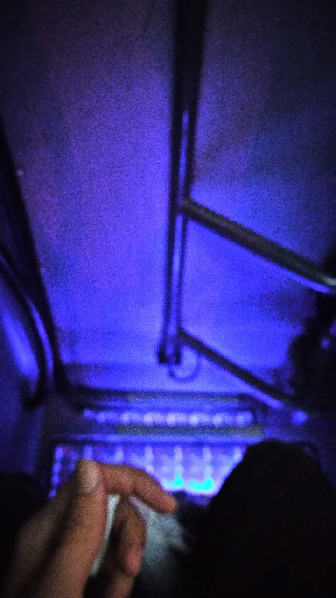
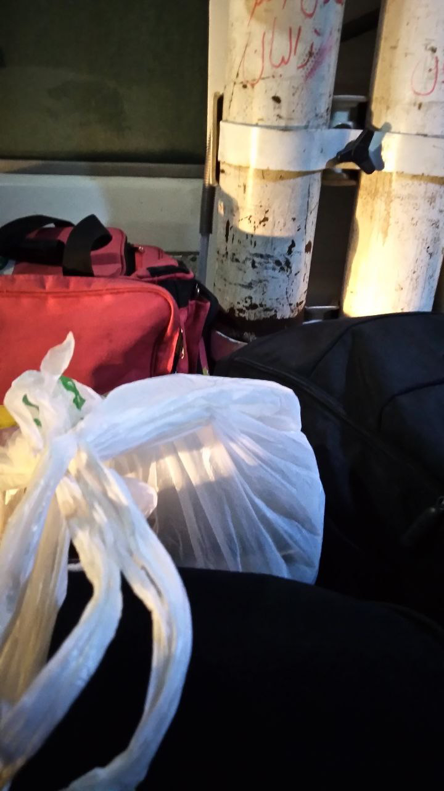
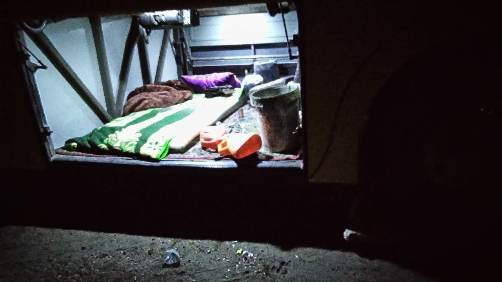
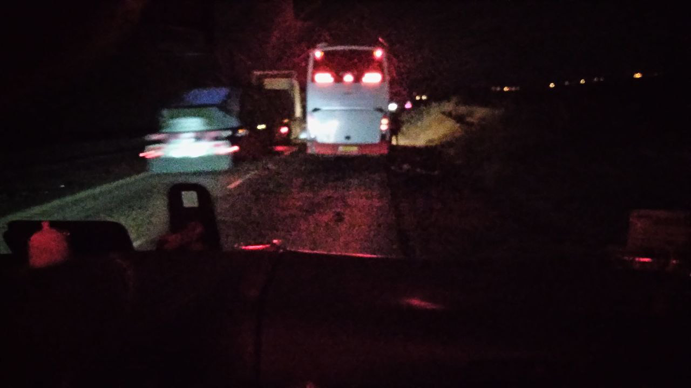
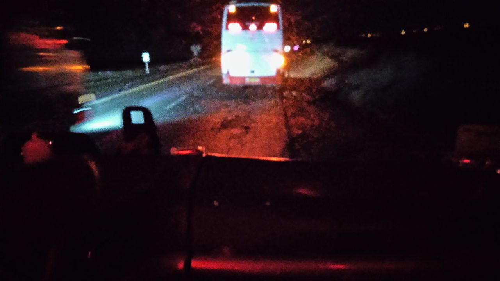
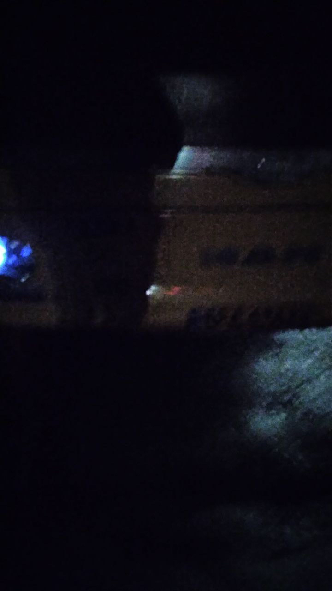
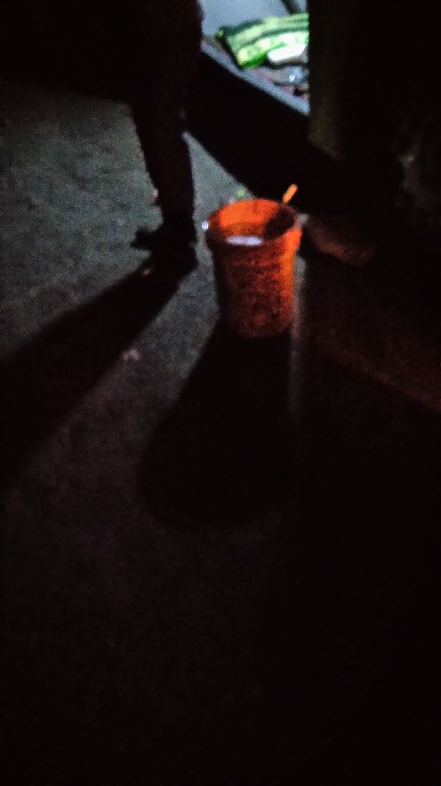
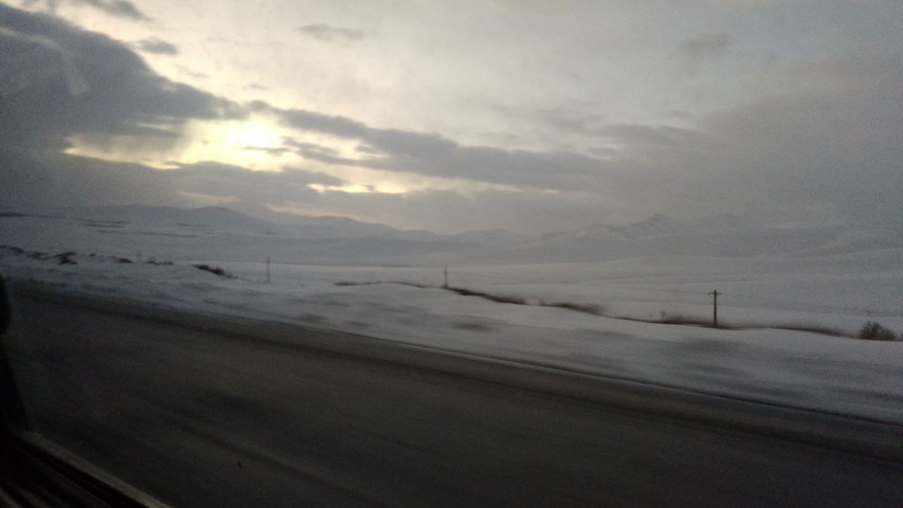
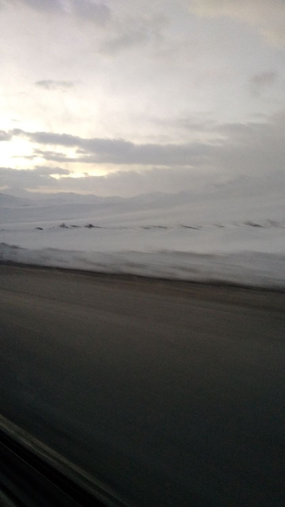
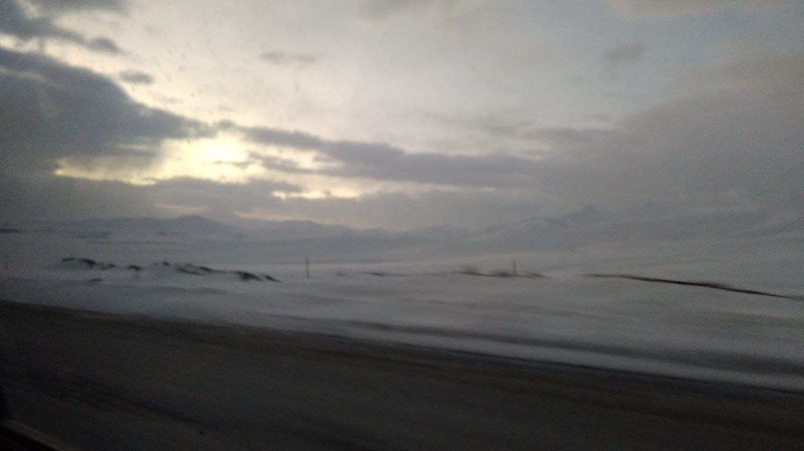

Sadra Sabouri
PhD Candidate
Open Source Developer
I am Khorram (joyful) from my trip to Khorramabad.
February 2023
I had a ticket for 11:59 PM. Even my departure time is just like my travel: spontaneous and unplanned. I got to the metro station at 10:00 PM and it was closed. I tried requesting a ride on Snapp (the Iranian Uber), but no one accepted. Still, I was too stubborn to give up over these little "signs." I went to the First Sadeghiyeh Square and got a Snapp from there. It was raining, and the fare was sky-high.
I had paid online, but the driver said it didn't go through, so I had to pay him in cash. When I got off, I noticed the money had indeed been deducted from my account :/ I called Snapp support, and they said they’d refund it within 48 hours (we’ll see about that).
I arrived at Terminal Cooperative 1 (Ta'avoni 1) and got on the bus. Seat 20, next to a curly-haired guy whose sweat smelled like piyaz-dagh (fried onions). There were two women behind us chatting in a Luri accent, and I realized how much I love that vibe. One of them was searching for "second-hand dishes" on Divar (an Iranian Craigslist-style app) but had misspelled it; when she realized her typo, she let out this funny little stoner laugh. It was 12:05, and we still hadn’t hit the road.
We stopped for a restroom break, and it was freezing. The vendors there were relentless—they had basically cornered a crowd of people who were only trying to reach the restroom before disaster struck. When I got back on the bus, around 3 AM, I got an email from USC scheduling an interview for graduate school (which eventually turned into my admission).
I reached Khorramabad. It was 6 AM and still dark. I ate one of those Kibi cheese squares I’d brought along and waited at the terminal until it got a bit lighter. At 7 AM, I set off toward Naser Guesthouse. On the way, I bought a Sangak (traditional pebble-baked flatbread) and ate two-thirds of it as I walked (pairing it in my stomach with the cheese I’d eaten an hour ago). My route passed through the Kurosh neighborhood (which Hedi later told me is a dangerous part of Khorramabad). Finally, I arrived at Naser Guesthouse.
It was run by two brothers. I don't know their real names, but I can guess:
Nader: The chubbier brother who was always behind the desk, very quiet and humble.
Naser: The jack-of-all-trades brother who occasionally dropped by the guesthouse.
When I got there, both were present. I asked:
"Do you have a single room?"
Nader: "No, we don't, sorry man."
Naser: "Yes, we do." (A brief exchange in Luri with Nader followed). [After I got the room, I realized their little chat was about dumping the room with the broken radiator on me].
He charged me 90,000 Tomans for one night and handed over the key.
As I was heading up to the second floor to take my room, I saw the first-floor residents; they were genuinely strange and scary-looking people. I reached the room—a 2x4 meter space that reminded me of the dungeons in Game of Thrones. I tried to familiarize myself with the space:
- 3 electrical outlets (only one worked).
- 4 light switches (one was loose, one turned on the fluorescent tube, and the other two were just for aesthetics).
- A small shelf where two ants were living.
- A radiator with a soaking wet floor underneath it.
- A bed holding the visible history of everyone who had ever slept on it.
The room at Naser Guesthouse. I'm speaking Gilaki here, going on about how excited I am to be renting such a "luxurious" room.
At first, I was quite reluctant to sleep there, but we are creatures of habit. A new bed is like a traditional arranged marriage: after you sleep together the first night, you finally get to know it and get used to it.
It was 8:15 AM. I read a bit more of the Weightless Neural Network research paper that Sepand sent ma and I had started earlier in bus. I was getting sleepy. Falling asleep in that freezing room meant I’d likely catch a cold and ruin the whole trip, but I decided to sleep anyways [under the covers].
At 10:15, Hedi called and woke me up. She had just found out I was there. She vented her worries a bit of the dangers of such a trip, and I explained how unnecessary they were.
I continued reading the research paper until 12:00, then went down and asked Nader about a nearby eatery. He recommended Nahavandi Kebab. I went and ordered a single skewer of Koobideh (I didn't have much of an appetite since that 2/3 of a Sangak had filled my stomach). I sat at a table with Agha Mehdi, who was also waiting for his food. He looked like the typical criminal you'd see in movies—he had a port-wine stain on his neck and dark lips. When his food arrived, he offered to share it with me (ta'arof). Since I had no strong desire to know him more, I very nicely declined and said mine was on the way. I ate the food. Despite Hedi telling me the local kebab was famous, it was nothing special; the kebab joint next to Sharif Metro in Tehran was three times better in quality.
After that, I went to a Refah supermarket and bought shampoo and biscuits. I was looking for a power strip and a towel. The one working outlet in the room just wasn't cutting it, and I needed to shower. I headed toward the city center and bought those two items as well.
I went back, read some more, and fell asleep.
This time when I woke up, Hedi had texted me 10 minutes earlier saying, "What's up?" I pushed myself to go see her. I figured it wouldn't happen today, so using the power strip I bought from the bazaar—which was currently charging my phone—I plugged in my laptop. I kept reading my article on the laptop, which went very well, and I gained a good understanding of it. Around 6 PM, Hedi told me to get ready. I tried to mix and match the clothes I'd brought to put together a nice outfit, considering it was my first time meeting her friends. What I ended up with was too light, and it was cold, so I packed a sweatshirt in my bag even though it ruined the whole outfit's aesthetic. I grabbed a Snapp and went to Keeyow Lake. When I arrived, the wind was howling, so I was forced to put the sweatshirt on.
I found Hedi and her friends, and we got into her friend's car.
[I'm going to skip the details from here until I got back to my room, which was about an hour].
I got back to the room. Hedi had told me she'd feel more at ease if I was back in Tehran.
So I decided to head back to the terminal that same night. I left at 22:30 and reached the Khorramabad intercity terminal by 23:00. There were no tickets left. I stood by the 23:00 bus hoping for a cancellation, but everyone showed up and it was full. The next bus was leaving at 23:30. During that half-hour wait in the terminal, a guy came up to me and pulled the classic "I need to get back to my hometown, do you have 20,000 Tomans to spare" scam. Since I was in a good mood and on a "helping humanity" vibe, I gave it to him. I struck up a conversation and joked around with the 23:30 driver, and eventually, he said, "Just stand right here, you can take the co-driver seat next to me and we'll go together." I was thrilled because I had loved the road from Tehran to Khorramabad (even though I slept through more than half of it), and deep down I really wanted to sit up front and watch the whole route.
We boarded, and the driver told me to go sit on the platform/stairs until we passed the toll booth, then come up front. While sitting there, I noticed an empty seat next to me. I sat in it and started writing the story of this very trip—the one you are reading right now.
 |
 |
| Riding on the stairs until the toll booth. | |
I was happy I got a cheaper seat. The situation wasn't perfect, though. A woman from Kerman was on the phone from the moment we departed until the Borujerd toll booth, talking someone's ear off and absolutely turning everyone's brains to mush (tilit - like soaked bread in broth). I was about to fall asleep when we stopped at the Borujerd toll, and the person whose seat I was actually in showed up. I got up and went to sit next to the driver. The driver had switched. This new one (who we’ll call Mohsen from now on) was much kinder. I took on the role of the driver’s apprentice (shofer), chatting with him so he wouldn't fall asleep. He told me he hadn't driven a bus in 4 years; he used to own one, then registered for a semi-truck, and now owns a shop in Khorramabad. Right as we were taking a curve surrounded by snow, while he was talking about his life’s dreams, the dashboard suddenly flashed 'STOP' and the bus died.
Mohsen, completely bewildered, told me to go wake up the main driver. I went to the luggage compartment, knocked on the door, and woke him up. He checked the engine and announced we had run out of diesel. It was around 2 AM, and Hedi was still awake, checking in on me. I told her we had stopped out of fuel, which worried her. I, however, was having a blast—it was a new experience, and I figured a few liters of diesel siphoned from passing trucks would get us back on the road. But the situation wasn't nearly as simple as I thought.

The berth in the luggage bay where I went to wake the main driver.
I was put in charge of the door. It was freezing outside, and there were several sick people on board, so it was crucial to keep the bus's heat trapped inside. During the hour that the drivers were busy flagging down cars for fuel, the passengers—who assumed I was the driver's assistant—kept nagging me. I had to keep explaining, "I swear to God, I'm just a passenger too! :("
 |
 |
| Stopped on the shoulder, somewhere before Borujerd. | |
First up was the Kermani woman. Judging by her knowledge of heavy machinery, either she or her husband owned a truck. She came up and said, "I have a flight to Kerman and need to be there by 7 AM. If it's not going to be fixed, tell me so I can grab a passing cab." The driver told her it would be fixed shortly.
Next was Hamid. Sparse beard, skinny, a total know-it-all—the kind of guy who’s an expert in everything and jumps in to help. After finishing his cigarette, he basically became one with the drivers, working side-by-side with them.
Then there was Majid, who kept his face mask on the whole time. He had a flashlight and decided to be the next one to go out into the cold to illuminate the workspace.
Then there was Milad and his mom. She was one of the sick passengers; she had lung cancer and an 8 AM doctor's appointment in Tehran for surgery. It was immediately obvious where Milad got his quick-tempered, high-pressure personality. His mom kept throwing insults at me, yelling about why I hadn't checked the fuel level. "You have no damn right to move a bus without fuel!" No matter how much I explained that I was just a passenger, she wouldn't listen. Sometimes, people just need someone to vent their anger on to calm down; it doesn't matter who it is.
Meanwhile, I stepped outside a few times, but it was so bone-chillingly cold you couldn't last more than 5 minutes. Major respect to Mohsen, Hamid, and the main driver who were out there the whole time.

One truck every ten minutes or so.
After an hour, the diesel was ready. I was doing the math in my head, thinking this was actually better—I'd get to Tehran at 7 AM when everything was open. Mohsen got behind the wheel to start the engine. Milad asked everyone to send a Salavat (Islamic blessing) for the bus to start. Mohsen held the ignition for 15 seconds, but it didn't turn over. "Great God, please do us a favor, I swear I didn't know this would happen." He cranked it a second time, and it roared to life! We were all thrilled. Mohsen told me to go tell the main driver and Hamid to pack up quickly so we could leave.

The diesel, finally.
I got off and walked to the back of the bus by the engine to tell them. The engine sounded weak. The main driver told me to tell Mohsen to turn off the heater. I sprinted back and told him. Right as Mohsen was saying, "I don't know how to turn the heater off," the engine died again.
Eventually, the bus's battery died too, so the pneumatic door had to be opened and closed manually. At first, Hamid used a Yazdi scarf (a traditional cotton cloth) to hold the door open because the metal bar was too freezing to touch bare-handed. They needed the door open to pour the rest of the diesel into the tank (the tank wouldn't open if the door was closed). Then he handed the door duty over to me. All the passengers were watching this process from the left-side windows, shining their phone flashlights on us. Every drop of diesel that spilled onto the snow felt like a dagger to the heart. The diesel was in, he cranked it one more time, but it didn't start.
That initial sense of adventure was slowly dying, and I was just getting tired. I stepped down and let go of the door.
Jalil—who seemed like he was super sleepy as he limped heavily and his sentences made zero sense—stood next to the bus telling me he had a judiciary exam (Azmoon-e Ghazavat) at 10 AM, and his whole life depended on it.
Agha Heydar, a genuine local Luri man, told me he had a doctor's appointment, but smartly booked two time slots so if he missed the first, he'd catch the second.
Milad, who had lost his temper a few times inside the bus, came down and started yelling at the driver, bringing up his mom's illness again. "Pain to my soul [Luri term of endearment/emphasis], couldn't you have checked the damn tank before the trip?"
The Kermani woman came down every few minutes, alternating between giving technical mechanical advice on how to fix the engine, and repeating that she had a 7 AM flight and needed to take a cab if it wasn't getting fixed.
It was almost 4 AM, and a semi-truck passed by maybe once every 10 minutes. I saw one man get off the bus, cross the road, and 10 minutes later he took his wife and child and hopped on a passing truck back to Khorramabad. Mohsen was deeply ashamed.
Mrs. Palang-vand (I call her that because her face was fully reconstructed with plastic surgery—like a Palang/leopard, the Iranian slang for such women) had booked two seats for comfort. After a while, she started nagging too. Her voice was incredibly shrill. Ten minutes later, she and the Kermani woman grabbed a blanket and waded into the snow, returning after "relieving the pressure."
During this time, the drivers had called Majid’s friend (the guy whose seat I had taken at the start of the trip), who allegedly was a diesel mechanic. He advised them to pour diesel directly into the engine block—which is highly dangerous—while simultaneously pumping it to bleed the air from the tank. The engine sounded a bit stronger, but it was no use; it wouldn't start. I was acting as the messenger between the main driver in the back and Mohsen in the front. They were yelling in Luri, and I had to translate it. The situation was grim.
"+ Give it gas! Just a tap of gas! A tap!"
"- He says give it gas."
[Sound of engine dying]
"+ Gi Bi i Donya" (Luri profanity)
"- I didn't catch that."
"+ Nothing uncle, I'm just cursing this whole situation :)"
Out of pure exhaustion, the main driver went to sleep, which made Milad completely boil over. He called the Red Crescent, EMS, Roadside Assistance, and the Police, telling each one a different fabricated story just to drag them out there:
"Hello! Pain to my soul, don't be tired! Uh, we are stuck 15 kilometers from Borujerd. We don't know what shit to eat (what to do)!"
There was absolutely nothing else we could do. When people are powerless and just want to save themselves, they become dangerous. I ate a bit of the Madar biscuits I had bought just to stay alive.
Around 5 AM, two tall guys wearing balaclavas that covered everything but their eyes and mouths appeared at the door. They were wearing Red Crescent uniforms. They asked, "Do we have a heart patient here?" I directed them to Milad (that was likely the fake story he had fed them). They said they'd take us to Borujerd, adding, "Let the women go first." A police officer with a sidearm showed up right after and asked, "Who's trying to kill who here?" :)
In the midst of this, Majid's friend arrived to pick him up. Milad sprinted past everyone and pleaded, "Pain to my soul, I'll pay you whatever you want, just take us to Tehran!" He got rejected, so he ran back toward the Red Crescent ambulance (complaining loudly to his mom: "God bless you, I told you we should have taken a car!"). During the goodbyes, everyone was throwing sarcastic remarks. The most relentless was Mrs. Palang-vand, who wouldn't let Mohsen breathe. She kept demanding, "I'm giving you my card number, transfer my refund right this second."
Two cars filled up. My conscience wouldn't let me push my way in and leave before the others. The cop told me, "They won't send a car for just 4 people, squeeze into this one." But the Red Crescent guys promised two more cars were on the way. Those of us left behind went back into the freezing bus to wait. It was me, Mohsen, the main driver, Jalil, and three others.
Two of them were an old man and his daughter, who soon announced their private car was arriving. The other was Esmail. I hadn't even noticed him before; he was very quiet. He wore a headband and had the vibe of a mature, experienced man. The driver warned me not to leave the bus door open because wolves might come around. In that moment, I vividly ran through various scenarios in my head about a wolf attack and how I would defend myself.
Jalil, who was incredibly anxious about his exam, said he was going out to stop a passing car. I wanted to get to Tehran too, so I stepped out with him, but we had no luck. Finally, the Red Crescent vehicles arrived. Jalil, Esmail, and I got in. They took down our phone numbers. The driver said, "The next car is on its way. My shift is over and I'm heading up the road. Just sit in here to warm up, then switch to the next one."
The next car arrived. Transferring between cars in the falling snow felt exactly like the snowy opening missions in Call of Duty. As soon as we sat down, Jalil, still in his dazed state, started rambling about the stages of the judiciary exam. It was obvious he hadn't eaten in ages, and his breath reeked of pickled garlic (sir-torshi). After a bit, Esmail started criticizing Milad. Honestly, he was right. He said, "I wouldn't even look at him; some people aren't even worth a glance. What's done is done, you have to be patient to fix it. You can't force things to work with aggression." Esmail had a flight to Mashhad, but he wasn't acting restless at all. I don't know if it was exhaustion or what, but there was such a profound peace in his voice and such strong faith in his heart that it calmed me down to the point where I actually teared up. I turned my face toward the window and let it out.
We were dropped off at a mosque in Borujerd. We left our bags at the door. There was a guy offering rides to Tehran for 250,000 Tomans per person. We ignored him and went inside. Milad, Agha Heydar, his wife, and a few others were inside the mosque. As soon as Esmail saw Milad, he completely withdrew into himself.
Jalil wanted to smoke. He offered me a squished Winston cigarette and started talking about how he was going to Tehran to work at a cookie factory near Azadi Square—9 million Tomans a month, room and board included. I told him that sounded really good, and that my dorm was in that area, though I'd never seen a cookie factory there. We did the math and figured out that if we left right then (it was 5:30 AM), he would make it to his exam. Right in the middle of our chat, Agha Heydar and his wife walked over, asked if we were heading to Tehran, and we said yes. Just like that, our group of four was formed. My bladder was about to explode, so I went to the bathroom to "release the pressure" and came back. We haggled a bit with the 250k driver but couldn't reach an agreement.
The four of us (Me, Jalil, Agha Heydar, and his wife Maryam) walked toward the square near the mosque. We tried negotiating with every passing car, but no luck. We stood near a coffeehouse, and the owner came out and said, "If you want, I know a reliable guy I can call."
We told him to call. The driver agreed to 225,000 Tomans per person. While we waited, Heydar asked me, "So, why did you come here?"
I said, "To visit a friend."
Jalil chimed in: "No offense, but I wish you hadn't come."
Heydar, who was a bit sharper, smirked: "Girlfriend?" [A little chuckle].
I told him about the culture shock I experienced on this trip, and he validated it. He casually told me a story about how someone was killed just over a prank call. The husband found out, went and killed two of the prank caller's brothers, then beheaded the actual prankster and another brother and threw them down a toilet well. He also told me how terrifying the "Posht-e Bazaar" (Behind the Market) neighborhood is, and my blood ran cold realizing I was just one step away from there when I went to buy the towel and power strip yesterday.
The driver arrived. He was a retired army veteran who looked incredibly beaten down by life. A cigarette never left his lips. When he tried to read his bank card number, he held it upside down. I was very skeptical about how "reliable" this guy was. We hit the road at 6 AM. Jalil sat up front; Heydar, his wife, and I were in the back.
The sun was coming up, and the scenery was breathtaking. I didn't want to sleep. Everyone else was asleep, and I wasn't very comfortable. The driver looked sleepy too—he kept drifting out of his lane, and several times I clearly felt he wasn't paying attention until the blaring horn of an oncoming car jolted him awake. I couldn't bring myself to say anything to him (looking back, what an idiotic move on my part not to speak up), so I just forced my eyes open so I'd be awake if anything happened. But eventually, I fell asleep too.
 |
 |
 |
| The sun coming up on the way back. | ||
When I woke up, it was 9 AM, and we had reached Qom. The others were awake too, trading stories and debating politics. When we got out to stretch, Jalil surprisingly didn't seem to be in any particular rush, and neither were we.
The driver dropped us off at the Imam Khomeini Shrine next to the metro station so we could get into the city faster. I realized Jalil's destination was right next to the Sharif Metro Station, so we stayed together. I said goodbye to Agha Heydar and his family. Heydar gave me his number, said their house was right next to the Khorramabad airport, and told me to drop by whenever I was in town. I told him I definitely would. It was around 11 AM.
We took Metro Line 1 together. I asked Jalil why he wasn't in a hurry. He said his brother worked in the Lorestan judiciary and would smooth things over for him even if he was late. He decided to first check out the job he was promised, which turned out to be on Teimouri Street, right by Sharif metro Station. He mentioned he had fallen from a second-story building and broken his 4th and 5th vertebrae. His duffel bag was incredibly heavy, and I helped him carry it as much as he'd let me.
We reached the address just above Sharif Station. Instead of a cookie factory, it was a sketchy temp/employment agency. We walked in looking completely wrecked, and a busted "baddie" (a heavily made-up receptionist with obvious plastic surgery) was managing the place. She looked me up and down and snarked, "Don't leave the bag outside, this is "the city" [and not wherever you're coming from], you know :))))". I didn't say anything. I brought the bag in, and Jalil went into the office. I overheard that same receptionist explaining the job conditions, followed by, "Pay the placement fee so we can process it."
The image of an expectant Jalil, who even had a blanket packed in his bag because he truly believed he was getting a dorm room right then and there, was absolutely heart-wrenching. But he was so exhausted he hadn't fully grasped the reality yet. The receptionist came out and told me, "Please wait inside, you aren't staying here." I didn't even look at her; I just went to say goodbye to Jalil. He took my number, and after showering me with traditional Iranian pleasantries (chakeram, mokhlesam), told me to hit him up when I had free time so we could hang out. I said, "Sure thing."
After that, I called Ali, found out he was at the university, went to meet him, ate lunch, and by 12:00 PM, I was back to my normal life.